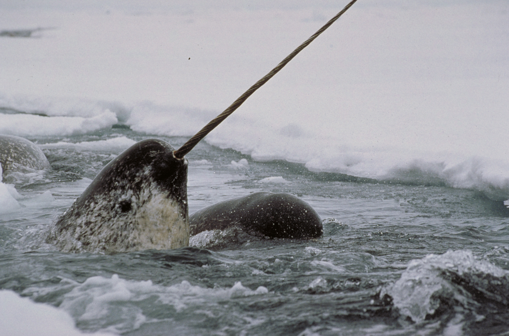
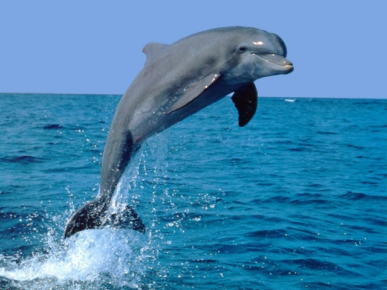

Ballena Jorobada
Ballena Jorobada Orca
Orca Delfin de Río
Delfin de Río Inicio
Inicio
Desde el establecimiento de la prohibición de caza de ballenas, los estudios han fracasado a la hora de averiguar si el nivel global de conservación de la especie aumenta o permanece estable. En la región antártica, las estimaciones más optimistas muestran un significativo incremento del 7,3 % anual desde la finalización de la caza ilegal de la Unión Soviética, aunque su número todavía permanece en menos del 1 % de los niveles anteriores a su caza comercial.6 También se ha sugerido que las poblaciones islandesas y californianas aumentan, pero estos incrementos no son estadísticamente significativos. Se calculó que la población mundial total estaba entre 5000 y 12 000 ejemplares en 2002, aunque con niveles altos de incertidumbre en las estimaciones disponibles para muchas áreas.3 Figura como especie en peligro de extinción en la Lista Roja de la UICN de especies amenazadas, y ha sido así desde la creación de la lista.1 En el caso de la subespecie antártica (B. m. intermedia), la de mayor tamaño, su situación es todavía peor y está calificada en la Lista Roja de la UICN como en peligro crítico.65 También figura en el Apéndice I (especies amenazadas de extinción)66 del Convenio sobre el Comercio Internacional de Especies de Fauna y Flora Salvaje Amenazadas (CITES).67 La mayor concentración conocida de la especie, con unos 2000 individuos, es la población del Pacífico Nordeste de la ballena azul del norte (B. m. musculus) subespecie que se extiende desde Alaska a Costa Rica, pero que se avista generalmente en California durante el verano. A veces esta población se desvía al océano Pacífico Noroeste y se han registrado avistamientos poco frecuentes entre la península de Kamchatka y el extremo norte de Japón.
La ballena azul (Balaenoptera musculus), también conocida como rorcual azul, es una especie de cetáceo misticeto de la familia Balaenopteridae. Su tamaño medio es de entre 24 y 27 metros de longitud y pesan entre 100 y 120 toneladas,2 aunque hay registros de ejemplares de más de 30 m de longitud y 170 t de peso,3 que lo convierten en el mayor animal del planeta Tierra, no solo en la actualidad sino también el mayor del que se tenga registro en la historia de la vida en la Tierra.N 1 Largo y estilizado, el cuerpo de este mamífero marino es de color gris azulado a lo largo del dorso y algo más claro en la zona ventral. Existen al menos tres subespecies distintas: B. m. musculus, del Atlántico norte y Pacífico norte; B. m. intermedia, del océano Antártico y B. m. brevicauda (también conocida como ballena azul pigmea), que se encuentra en el Índico y en el Pacífico sur. Existen dudas sobre la validez de una cuarta subespecie, B. m. indica, que también se encuentra en el océano Índico. Como otras ballenas barbadas, su dieta consiste principalmente en pequeños crustáceos conocidos como kril. Las ballenas azules eran abundantes en casi todos los océanos hasta comienzos del siglo XX. Durante más de cuarenta años fueron cazadas hasta casi su extinción, lo que incentivó su protección por parte de la comunidad internacional en 1966.4 Un informe de 2002 estimó su número entre 5000 y 12 000 ejemplares en todo el mundo, localizados en al menos cinco grupos,32 aunque una investigación más reciente sobre la subespecie pigmea sugiere que estos datos pueden ser una subestimación.5 Antes del comienzo de la caza comercial de ballenas, la población más numerosa era la de la Antártida, con alrededor de 239 000 ejemplares (entre 202 000 y 311 000).6 Actualmente solo quedan concentraciones mucho menores (de alrededor de 2000 individuos) en los océanos Pacífico nororiental, Antártico e Índico. Hay dos grupos más en el Atlántico norte y por lo menos dos en el hemisferio sur.
| Narval | Ballena Jorobada |
Orca |
| Delfin | Delfin de Río |
Inicio |